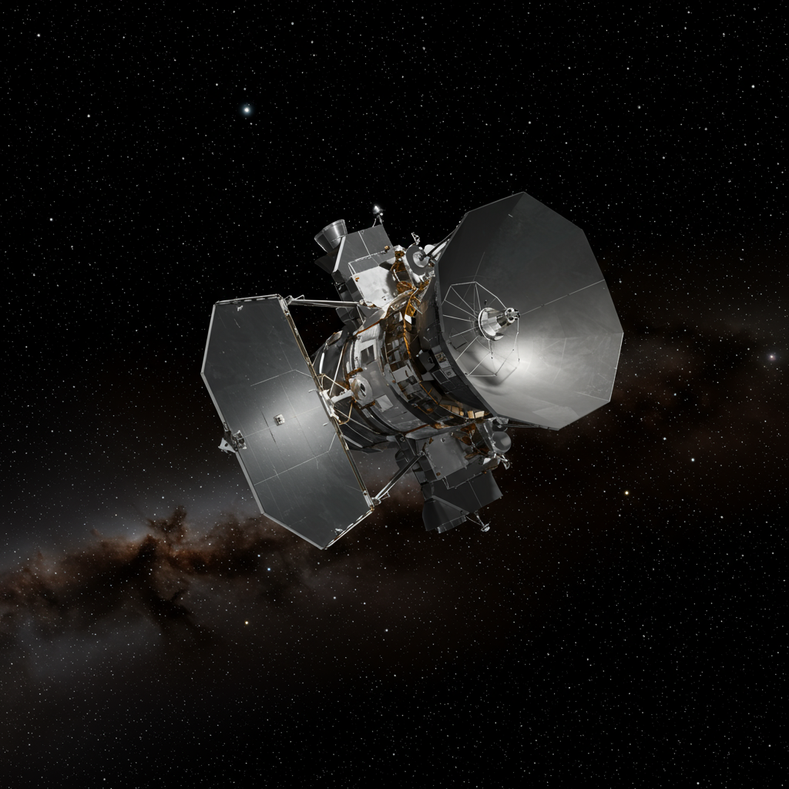

Herschel Space Observatory
Agencia: ESA (Agencia Espacial Europea)
Fecha de lanzamiento: 14 de mayo de 2009
Duración de misión: 2009–2013
Tipo de misión: Telescopio espacial infrarrojo lejano y submilimétrico
Objetivo: Estudiar la formación de estrellas y galaxias, composición de nubes moleculares frías, evolución del polvo cósmico
Carga científica: Espejo de 3.5 m (el mayor en su momento para astronomía espacial), espectrómetros, cámaras infrarrojas de alta sensibilidad
Impacto histórico
El Observatorio Espacial Herschel permitió ver el universo frío, revelando regiones donde nacen estrellas y galaxias. Su capacidad para detectar longitudes de onda submilimétricas abrió nuevas ventanas para estudiar el polvo cósmico y los procesos de formación estelar en detalle inédito. Fue uno de los mayores proyectos científicos de la ESA y dejó un legado de datos esenciales para el estudio del cosmos.
El observatorio fue nombrado en honor a William Herschel, astrónomo germano-británico del siglo XVIII que descubrió el planeta Urano y realizó estudios pioneros en el infrarrojo. Su trabajo sentó las bases para la astronomía infrarroja moderna, haciendo de su nombre el homenaje perfecto para un telescopio dedicado a explorar el universo frío.
Estado actual
El Herschel Space Observatory finalizó sus operaciones científicas en abril de 2013, cuando agotó su helio líquido refrigerante esencial para los instrumentos. Desde entonces permanece inactivo en una órbita heliocéntrica, pero sus datos siguen siendo utilizados y estudiados ampliamente por astrónomos de todo el mundo.